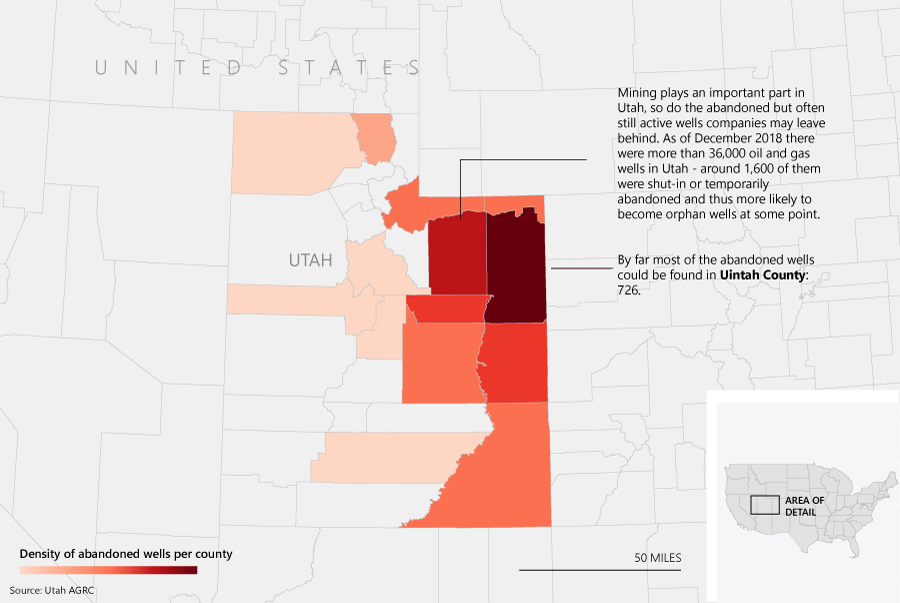
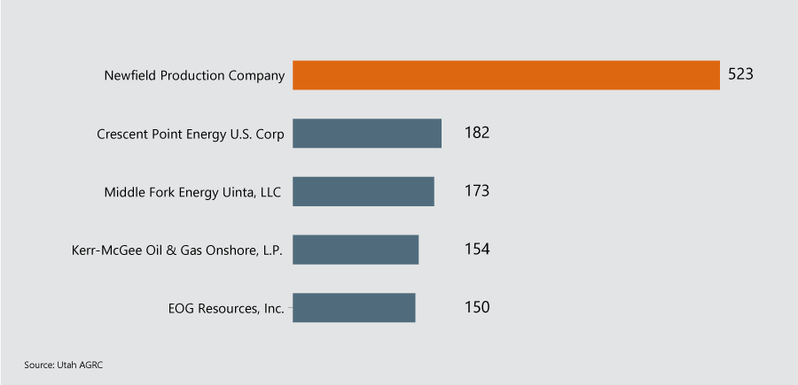
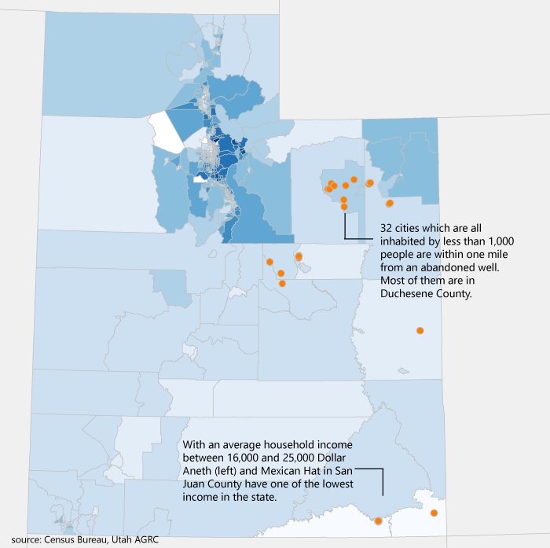
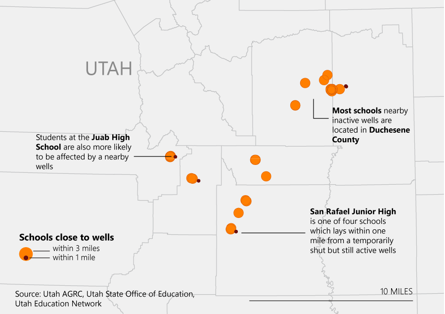

Fossil fuels
BY Catharina Felke
Published December 10, 2018
A deadly explosion in Denver last spring, another one in a suburban area in Colorado, an evacuation of a school in Ohio due to gas leakage. Many are not aware of the threats that abandoned wells may pose.
The Environmental Protection Agency (EPA) estimates that there are around 3.1 million abandoned wells across the United States. A concrete count can’t be provided, simply because no one knows how many abandoned wells there are actually. This uncertainty is partly due to states reporting data about well production and well statuses in various ways, or documenting it not at all. In order to get an impression of how many abandoned wells may exist within (at least) one state, I analyzed the corresponding data of gas and oil wells in Utah.
Utah's abandoned oil and gas wells
As seen above the majority of wells – be it temporarily abandoned or shut-in – can be found in Uintah County. Moreover, counties in the southeast of Utah don't have or at least don't know of any abandoned wells in their area. There may be various reasons for this, the main one: Operators are generally not required to notify governmental bodies when they place a well in shut-in status. According to a report by the Government Accountability Office (GOA) of this May, officials noted that it is difficult for field offices to identify all shut-in wells in order to review them. 'Officials from one field office told us that identifying when a well becomes shut-in is challenging unless inspectors are able to physically find the well.'
A shut-in well is a well that is temporarily plugged but capable of producing oil or gas in the future. The well is secured, but easily re-opened. A well may be shut in due to poor market conditions, inadequate well maintenance and repairing, or lack of equipment to complete it, among other reasons. In contrast to temporarily abandoned wells the well review policy doesn't contain any directives for shut-in wells whereas an operator is obliged to conduct well integrity testing prior to placing a well in temporarily abandoned status.
However, there are many cases in which wells are not properly plugged before being abandoned. This is more common when oil prices fall rapidly, making many wells uneconomical, as in the 1980s, the 2008 financial crisis, and the 2014 downturn. Events like these often cause small companies to go bankrupt leaving their wells 'orphaned'. Utah may not have a database regarding its orphaned wells like Wyoming but as of December 2018 there were 2294 shut-in wells compared to 64 temporarily abandoned ones. The majority of the former one was operated by the Newfield Production Company, an oil company based in Denver.
Who is in charge of Utah's shut-in wells?
The beforementioned report from the GOA had examined the Bureau of Land Management's (BLM) handling of gas and oil wells in general. As part of the Department of the Interior the BLM manages leases for drilling, fracking as well as selling the rights to public lands. According to the report the BLM lacks consistent procedures for reviewing wells and bonds, has not systematically tracked data on cleanup expenses and used inaccurate data to generate its reviews. The bureau also faces 'challenges' in managing its potential oil and gas well liabilities, including identifying and managing certain inactive wells. Keeping track of abandoned wells is a low priority, told Rob Jackson, a researcher at Stanford University, NPR in 2016. Across the U.S., from Pennsylvania to Texas to California, there are millions of abandoned wells, though. 'When a state sees a well is plugged, they typically put a check mark by that well in a database, or in a file somewhere, and they don't do anything for the most part', he says.
This is particuliarily questionable since wells that are in shut-in status have the potential to become orphaned wells which are in turn more likely to leak pollutants, including methane gas, which can contaminate groundwater and even trigger explosions. Analzing Census data and the known locations of abandoned and shut-in wells across Utah showed that people in less populated areas and with little income are often living within one mile to at least one wells. In total, 32 cities were affected by 56 of those wells.
Less income and small towns
According to an investigation by the L.A. County in early 2018 the risks oil and gas wells can pose range from respiratory health affects to nausea, skin rashes and to increased risk of nervous system as well as reproductive system problems. Unplugged or poorly plugged wells may affect the groundwater. Old wells may have degraded well casing or cement that can allow oil, gas, or salty water to leak into freshwater aquifers. In 2011, a Groundwater Protection Council study found that abandoned wells caused 41 incidents of groundwater contamination in Ohio between 1983 and 2007, and 30 in Texas between 1993 and 2008. Environmental pollution to this extent affect children and younger people more heavily than adults. My analysis found that not only small towns but also certain schools are located within one or three miles of abandoned wells.
Students' health could be affected by abandoned wells
The Environmental Protection Agency is currently working on estimating the number of abandoned gas and oils wells in the United States while also trying to gather as much current and historic data. Emissions from abandoned oil and gas wells are currently not included in the EPA's National Emission Inventory.